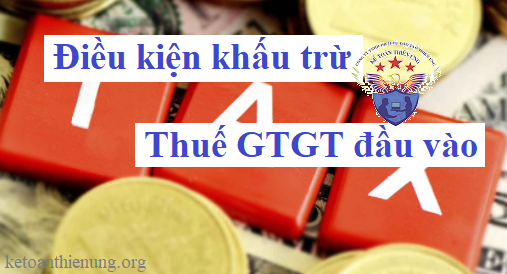

Điều kiện khấu trừ thuế GTGT đầu vào, hướng dẫn cách xác định thuế Giá trị gia tăng được khấu trừ đối với trường hợp DN sản xuất kinh doanh hàng chịu thuế và Không chịu thuế GTGT theo quy định tại Luật thuế GTGT số 48/2024/QH15, Thông tư 219/2013/TT-BTC, Thông tư 119/2014/TT-BTC và Thông tư 26/2015/TT-BTC của Bộ tài chính:
Từ ngày 1/7/2025 trở đi khi Luật thuế GTGT số 48/2024/QH15 chính thức có hiệu lực thì:
Điều kiện khấu trừ thuế GTGT đầu vào được quy định như sau:
Căn cứ theo điều 25+26+27+28 tại Mục 2 của Nghị định 181/2025/NĐ-CP hướng dẫn thi hành Luật thuế GTGT
Mục 2. ĐIỀU KIỆN KHẤU TRỪ THUẾ GIÁ TRỊ GIA TĂNG ĐẦU VÀO
Điều 25. Hóa đơn, chứng từ nộp thuế
Cơ sở kinh doanh phải có hóa đơn giá trị gia tăng của hàng hóa, dịch vụ mua vào hoặc chứng từ nộp thuế giá trị gia tăng ở khâu nhập khẩu hoặc chứng từ nộp thuế giá trị gia tăng thay cho phía nước ngoài theo quy định tại điểm a khoản 2 Điều 14 Luật Thuế giá trị gia tăng (bao gồm cả chứng từ nộp thuế giá trị gia tăng theo tỷ lệ % nhân với doanh thu thay cho phía nước ngoài).
Điều 26. Chứng từ thanh toán không dùng tiền mặt
Cơ sở kinh doanh phải có chứng từ thanh toán không dùng tiền mặt đối với hàng hóa, dịch vụ mua vào (bao gồm cả hàng hóa nhập khẩu) từ 05 triệu đồng trở lên đã bao gồm thuế giá trị gia tăng. Trong đó:
Điều 27. Điều kiện khấu trừ thuế giá trị gia tăng đầu vào đối với hàng hóa, dịch vụ xuất khẩu
Đối với hàng hóa, dịch vụ xuất khẩu, ngoài các điều kiện quy định tại Điều 25, Điều 26 Nghị định này còn phải có: hợp đồng ký kết với bên nước ngoài về việc bán, gia công hàng hóa, cung cấp dịch vụ; hóa đơn bán hàng hóa, cung cấp dịch vụ; chứng từ thanh toán không dùng tiền mặt; tờ khai hải quan đối với hàng hóa xuất khẩu (trừ trường hợp không cần phải có tờ khai hải quan theo quy định của pháp luật về hải quan); phiếu đóng gói, vận đơn, chứng từ bảo hiểm hàng hóa (nếu có). Trong đó:
1. Đối với hợp đồng bán hàng hóa, gia công hàng hóa, cung cấp dịch vụ cho bên nước ngoài (bên nhập khẩu): trường hợp ủy thác xuất khẩu là hợp đồng ủy thác xuất khẩu và biên bản thanh lý hợp đồng ủy thác xuất khẩu (trường hợp đã kết thúc hợp đồng) hoặc biên bản đối chiếu công nợ định kỳ giữa bên ủy thác xuất khẩu và bên nhận ủy thác xuất khẩu có ghi rõ: số lượng, chủng loại sản phẩm, giá trị hàng ủy thác đã xuất khẩu; số, ngày hợp đồng xuất khẩu của bên nhận ủy thác xuất khẩu ký với bên nước ngoài; số, ngày, số tiền ghi trên chứng từ thanh toán không dùng tiền mặt với bên nước ngoài của bên nhận ủy thác xuất khẩu; số, ngày, số tiền ghi trên chứng từ thanh toán của bên nhận ủy thác xuất khẩu thanh toán cho bên ủy thác xuất khẩu; số, ngày tờ khai hải quan hàng hóa xuất khẩu của bên nhận ủy thác xuất khẩu.
2. Đối với tờ khai hải quan hàng hóa xuất khẩu: tờ khai đã hoàn thành thủ tục hải quan theo quy định của pháp luật về hải quan.
3. Đối với chứng từ thanh toán không dùng tiền mặt: chứng từ chuyển tiền từ tài khoản của bên nhập khẩu (hoặc ngân hàng phục vụ bên nhập khẩu) sang tài khoản mang tên cơ sở kinh doanh (bên xuất khẩu) mở tại ngân hàng theo các hình thức thanh toán phù hợp với thỏa thuận trong hợp đồng và quy định của ngân hàng. Chứng từ thanh toán tiền là giấy báo có của ngân hàng bên xuất khẩu về số tiền đã nhận được từ tài khoản của ngân hàng bên nhập khẩu. Trường hợp thanh toán trả chậm, phải có thỏa thuận ghi trong hợp đồng, phụ lục hợp đồng xuất khẩu, đến thời hạn thanh toán bên xuất khẩu phải có chứng từ thanh toán không dùng tiền mặt. Trường hợp ủy thác xuất khẩu thì phải có chứng từ thanh toán không dùng tiền mặt của bên nước ngoài cho bên nhận ủy thác và bên nhận ủy thác phải có chứng từ thanh toán không dùng tiền mặt đối với hàng xuất khẩu cho bên ủy thác. Trường hợp bên nước ngoài thanh toán trực tiếp cho bên ủy thác xuất khẩu thì bên ủy thác phải có chứng từ thanh toán không dùng tiền mặt và việc thanh toán này phải được quy định trong hợp đồng. Trường hợp bên xuất khẩu bán các khoản phải thu của bên nhập khẩu cho bên thứ ba (bên mua các khoản phải thu) ở nước ngoài thì phải có chứng từ thanh toán không dùng tiền mặt từ bên thứ ba (bên mua các khoản phải thu), việc thanh toán này phải được quy định trong hợp đồng xuất khẩu và hợp đồng mua bán các khoản phải thu với bên thứ ba ở nước ngoài; bên xuất khẩu phải có văn bản cam kết, giải trình về lý do số tiền thanh toán khác số tiền phải thanh toán theo hợp đồng xuất khẩu phù hợp với hợp đồng mua bán các khoản phải thu. Trừ một số trường hợp không phải đáp ứng điều kiện chứng từ thanh toán không dùng tiền mặt như sau:
a) Trường hợp hàng hóa, dịch vụ xuất khẩu được thanh toán cấn trừ vào khoản tiền vay nợ nước ngoài, cơ sở kinh doanh phải có đủ điều kiện, thủ tục, hồ sơ như sau: hợp đồng vay nợ (đối với những khoản vay tài chính có thời hạn dưới 01 năm); hoặc giấy xác nhận đăng ký khoản vay của Ngân hàng Nhà nước Việt Nam (đối với những khoản vay trên 01 năm); chứng từ thanh toán không dùng tiền mặt chuyển tiền của bên nước ngoài vào Việt Nam. Phương thức thanh toán hàng hóa, dịch vụ xuất khẩu cấn trừ vào khoản nợ vay nước ngoài phải được quy định trong hợp đồng xuất khẩu; bản xác nhận của bên nước ngoài về cấn trừ khoản nợ vay; trường hợp sau khi cấn trừ giá trị hàng hóa, dịch vụ xuất khẩu vào khoản nợ vay của nước ngoài có chênh lệch, thì số tiền chênh lệch phải có chứng từ thanh toán không dùng tiền mặt.
b) Trường hợp cơ sở kinh doanh xuất khẩu sử dụng tiền thanh toán hàng hóa, dịch vụ xuất khẩu để góp vốn với bên nhập khẩu ở nước ngoài, cơ sở kinh doanh phải có đủ điều kiện, thủ tục, hồ sơ như sau: hợp đồng góp vốn; việc sử dụng tiền thanh toán hàng hóa, dịch vụ xuất khẩu để góp vốn vào bên nhập khẩu ở nước ngoài phải được quy định trong hợp đồng xuất khẩu; trường hợp số tiền góp vốn nhỏ hơn doanh thu hàng hóa xuất khẩu thì số tiền chênh lệch phải có chứng từ thanh toán không dùng tiền mặt.
c) Trường hợp bên nước ngoài ủy quyền cho bên thứ ba là tổ chức, cá nhân ở nước ngoài thực hiện thanh toán thì việc thanh toán theo ủy quyền phải được quy định trong hợp đồng xuất khẩu (phụ lục hợp đồng hoặc văn bản điều chỉnh hợp đồng (nếu có)).
d) Trường hợp bên nước ngoài yêu cầu bên thứ ba là tổ chức ở Việt Nam thanh toán bù trừ công nợ với bên nước ngoài bằng thực hiện thanh toán không dùng tiền mặt số tiền bên nước ngoài phải thanh toán cho cơ sở kinh doanh xuất khẩu và việc yêu cầu thanh toán bù trừ công nợ nêu trên có quy định trong hợp đồng xuất khẩu (phụ lục hợp đồng hoặc văn bản điều chỉnh hợp đồng (nếu có)) và có chứng từ thanh toán là giấy báo có của ngân hàng bên xuất khẩu về số tiền đã nhận được từ tài khoản của bên thứ ba, đồng thời bên xuất khẩu phải có bản đối chiếu công nợ có xác nhận của bên nước ngoài và bên thứ ba.
đ) Trường hợp bên nước ngoài (bên nhập khẩu) ủy quyền cho bên thứ ba là tổ chức, cá nhân ở nước ngoài thực hiện thanh toán; bên thứ ba yêu cầu tổ chức ở Việt Nam (bên thứ tư) thanh toán bù trừ công nợ với bên thứ ba bằng việc thực hiện thanh toán không dùng tiền mặt số tiền bên nhập khẩu phải thanh toán cho bên xuất khẩu thì bên xuất khẩu phải có đủ các điều kiện, hồ sơ như sau: hợp đồng xuất khẩu (phụ lục hợp đồng hoặc văn bản điều chỉnh hợp đồng (nếu có)) quy định việc ủy quyền thanh toán, bù trừ công nợ giữa các bên; chứng từ thanh toán là giấy báo có của ngân hàng về số tiền bên xuất khẩu nhận được từ tài khoản của bên thứ tư; bản đối chiếu công nợ có xác nhận của các bên liên quan (giữa bên xuất khẩu với bên nhập khẩu, giữa bên thứ ba ở nước ngoài với bên thứ tư là tổ chức ở Việt Nam).
e) Trường hợp bên nước ngoài ủy quyền cho Văn phòng đại diện tại Việt Nam thực hiện thanh toán vào tài khoản của bên xuất khẩu và việc ủy quyền thanh toán nêu trên có quy định trong hợp đồng xuất khẩu (phụ lục hợp đồng hoặc văn bản điều chỉnh hợp đồng (nếu có)).
g) Trường hợp bên nước ngoài (trừ trường hợp bên nước ngoài là cá nhân) thực hiện thanh toán từ tài khoản tiền gửi vãng lai của bên nước ngoài mở tại các tổ chức tín dụng tại Việt Nam thì việc thanh toán này phải được quy định trong hợp đồng xuất khẩu (phụ lục hợp đồng hoặc văn bản điều chỉnh hợp đồng (nếu có)). Chứng từ thanh toán là giấy báo có của ngân hàng bên xuất khẩu về số tiền đã nhận được từ tài khoản vãng lai của bên nước ngoài đã ký hợp đồng.
h) Trường hợp bên nước ngoài là doanh nghiệp tư nhân thực hiện thanh toán thông qua tài khoản vãng lai của chủ doanh nghiệp tư nhân mở tại tổ chức tín dụng ở Việt Nam và được quy định trong hợp đồng xuất khẩu (phụ lục hợp đồng hoặc văn bản điều chỉnh hợp đồng (nếu có)) thì được xác định là thanh toán không dùng tiền mặt. Trường hợp người mua bên nước ngoài là doanh nghiệp tư nhân nhập cảnh qua các cửa khẩu quốc tế của Việt Nam bằng hộ chiếu mang theo ngoại tệ tiền mặt, đồng Việt Nam tiền mặt để nộp vào tài khoản vãng lai của chủ doanh nghiệp tư nhân mở tại tổ chức tín dụng ở Việt Nam phải khai báo hải quan cửa khẩu khi xuất cảnh, nhập cảnh theo hướng dẫn của Ngân hàng Nhà nước Việt Nam.
i) Trường hợp bên nước ngoài thực hiện thanh toán không dùng tiền mặt nhưng số tiền thanh toán trên chứng từ thanh toán không dùng tiền mặt không phù hợp với số tiền phải thanh toán như đã thỏa thuận trong hợp đồng hoặc phụ lục hợp đồng thì: nếu số tiền thanh toán trên chứng từ thanh toán không dùng tiền mặt có trị giá nhỏ hơn số tiền phải thanh toán như đã thỏa thuận trong hợp đồng hoặc phụ lục hợp đồng thì cơ sở kinh doanh phải giải trình rõ lý do như: phí chuyển tiền của ngân hàng, điều chỉnh giảm giá do hàng kém chất lượng hoặc thiếu hụt (đối với trường hợp này phải có văn bản thỏa thuận giảm giá giữa bên nhập khẩu và bên xuất khẩu); nếu số tiền thanh toán trên chứng từ thanh toán không dùng tiền mặt có trị giá lớn hơn số tiền phải thanh toán như đã thỏa thuận trong hợp đồng hoặc phụ lục hợp đồng thì cơ sở kinh doanh phải giải trình rõ lý do như: thanh toán một lần cho nhiều hợp đồng, ứng trước tiền hàng; cơ sở kinh doanh phải cam kết chịu trách nhiệm trước pháp luật về các lý do giải trình với cơ quan thuế và các văn bản điều chỉnh (nếu có).
k) Trường hợp bên nước ngoài thanh toán không dùng tiền mặt nhưng chứng từ thanh toán không dùng tiền mặt không đúng tên ngân hàng phải thanh toán đã thỏa thuận trong hợp đồng, nếu nội dung chứng từ thể hiện rõ tên người thanh toán, tên người thụ hưởng, số hợp đồng xuất khẩu, giá trị thanh toán phù hợp với hợp đồng xuất khẩu đã được ký kết thì được chấp nhận là chứng từ thanh toán hợp lệ.
l) Trường hợp cơ sở kinh doanh xuất khẩu hàng hóa, dịch vụ cho bên nước ngoài (bên thứ hai), đồng thời nhập khẩu hàng hóa, dịch vụ với bên nước ngoài khác hoặc mua hàng với tổ chức, cá nhân ở Việt Nam (bên thứ ba); nếu cơ sở kinh doanh có thỏa thuận với bên thứ hai và bên thứ ba về việc bên thứ hai thực hiện thanh toán không dùng tiền mặt cho bên thứ ba số tiền mà cơ sở kinh doanh còn phải thanh toán cho bên thứ ba thì việc bù trừ thanh toán giữa các bên phải được quy định trong hợp đồng xuất khẩu, hợp đồng nhập khẩu hoặc hợp đồng mua hàng (phụ lục hợp đồng hoặc văn bản điều chỉnh hợp đồng (nếu có)) và cơ sở kinh doanh phải có bản đối chiếu công nợ có xác nhận của các bên liên quan (giữa cơ sở kinh doanh với bên thứ hai, giữa cơ sở kinh doanh với bên thứ ba).
m) Trường hợp hàng hóa xuất khẩu ra nước ngoài nhưng vì lý do khách quan bên nước ngoài từ chối không nhận hàng và cơ sở kinh doanh tìm được khách hàng mới cùng quốc gia với khách hàng ký kết hợp đồng mua bán ban đầu để bán lô hàng trên thì chứng từ khấu trừ gồm toàn bộ hồ sơ xuất khẩu liên quan đến hợp đồng xuất khẩu ký kết với khách hàng ban đầu (hợp đồng, tờ khai hải quan đối với hàng hóa xuất khẩu, hóa đơn), công văn giải trình của cơ sở kinh doanh lý do có sự sai khác tên khách hàng mua (trong đó cơ sở kinh doanh cam kết tự chịu trách nhiệm về tính chính xác của thông tin, đảm bảo không có gian lận), toàn bộ hồ sơ xuất khẩu liên quan đến hợp đồng xuất khẩu ký kết với khách hàng mới (hợp đồng, hóa đơn bán hàng, chứng từ thanh toán không dùng tiền mặt theo quy định và các chứng từ khác (nếu có)).
n) Trường hợp xuất khẩu lao động mà cơ sở kinh doanh xuất khẩu lao động thu tiền trực tiếp của người lao động thì phải có chứng từ thu tiền của người lao động.
o) Trường hợp xuất khẩu hàng hóa, dịch vụ để trả nợ nước ngoài cho Chính phủ thì phải có xác nhận của ngân hàng về lô hàng xuất khẩu đã được bên nước ngoài chấp nhận trừ nợ hoặc xác nhận bộ chứng từ đã được gửi cho bên nước ngoài để trừ nợ; chứng từ thanh toán thực hiện theo hướng dẫn của Bộ Tài chính.
p) Trường hợp hàng hóa, dịch vụ xuất khẩu thanh toán bằng hàng là trường hợp xuất khẩu hàng hóa (kể cả gia công hàng hóa xuất khẩu), dịch vụ cho bên nước ngoài nhưng việc thanh toán giữa cơ sở kinh doanh xuất khẩu và bên nước ngoài bằng hình thức bù trừ giữa giá trị hàng hóa, dịch vụ xuất khẩu, tiền công gia công hàng hóa xuất khẩu với giá trị hàng hóa, dịch vụ mua của bên nước ngoài. Hàng hóa, dịch vụ xuất khẩu thanh toán bằng hàng thì: phương thức thanh toán đối với hàng xuất khẩu bằng hàng phải được quy định trong hợp đồng xuất khẩu; hợp đồng mua hàng hóa, dịch vụ của bên nước ngoài; có tờ khai hải quan về hàng hóa nhập khẩu thanh toán bù trừ với hàng hóa, dịch vụ xuất khẩu; có văn bản xác nhận với bên nước ngoài về việc số tiền thanh toán bù trừ giữa hàng hóa, dịch vụ xuất khẩu với hàng hóa nhập khẩu, dịch vụ mua của bên nước ngoài; trường hợp sau khi thanh toán bù trừ giữa giá trị hàng hóa, dịch vụ xuất khẩu và giá trị hàng hóa, dịch vụ nhập khẩu có chênh lệch, số tiền chênh lệch phải có chứng từ thanh toán không dùng tiền mặt.
q) Trường hợp xuất khẩu hàng hóa sang các nước có chung biên giới theo quy định của pháp luật về việc quản lý hoạt động thương mại biên giới với các nước có chung biên giới thực hiện theo hướng dẫn của Bộ Tài chính và Ngân hàng Nhà nước Việt Nam.
r) Trường hợp bên nước ngoài mất khả năng thanh toán, cơ sở kinh doanh xuất khẩu hàng hóa phải có văn bản giải trình rõ lý do và được sử dụng một trong số các giấy tờ sau để thay thế cho chứng từ thanh toán không dùng tiền mặt: tờ khai hải quan hàng hóa nhập khẩu từ Việt Nam đã đăng ký với cơ quan hải quan tại nước nhập khẩu hàng hóa (01 bản sao); hoặc đơn khởi kiện đến tòa án hoặc cơ quan có thẩm quyền tại nước nơi cư trú kèm giấy thông báo hoặc kèm giấy tờ có tính chất xác nhận của cơ quan này về việc thụ lý đơn khởi kiện (01 bản sao); hoặc phán quyết thắng kiện của tòa án nước ngoài cho cơ sở kinh doanh (01 bản sao); hoặc giấy tờ của tổ chức có thẩm quyền nước ngoài xác nhận (hoặc thông báo) bên nước ngoài phá sản hoặc mất khả năng thanh toán (01 bản sao).
s) Trường hợp hàng hóa xuất khẩu không đảm bảo chất lượng phải tiêu hủy, cơ sở kinh doanh xuất khẩu hàng hóa phải có văn bản giải trình rõ lý do và được sử dụng biên bản tiêu hủy (hoặc giấy tờ xác nhận việc tiêu hủy) hàng hóa ở nước ngoài của cơ quan thực hiện tiêu hủy (01 bản sao), kèm chứng từ thanh toán không dùng tiền mặt đối với chi phí tiêu hủy thuộc trách nhiệm chi trả của cơ sở kinh doanh xuất khẩu hàng hóa hoặc kèm giấy tờ chứng minh chi phí tiêu hủy thuộc trách nhiệm của bên nhập khẩu hoặc bên thứ ba (01 bản sao) để thay thế cho chứng từ thanh toán không dùng tiền mặt. Trường hợp bên nhập khẩu hàng hóa phải đứng ra làm thủ tục tiêu hủy tại nước ngoài thì biên bản tiêu hủy (hoặc giấy tờ xác nhận việc tiêu hủy) ghi tên bên nhập khẩu hàng hóa.
t) Trường hợp hàng hóa xuất khẩu bị tổn thất, cơ sở kinh doanh xuất khẩu hàng hóa phải có văn bản giải trình rõ lý do và được sử dụng một trong số các giấy tờ sau để thay thế cho chứng từ thanh toán không dùng tiền mặt: giấy xác nhận việc tổn thất ngoài biên giới Việt Nam của cơ quan có thẩm quyền liên quan (01 bản sao); hoặc biên bản xác định tổn thất hàng hóa trong quá trình vận chuyển ngoài biên giới Việt Nam nêu rõ nguyên nhân tổn thất (01 bản sao). Nếu cơ sở kinh doanh xuất khẩu hàng hóa đã nhận được tiền bồi thường hàng hóa xuất khẩu bị tổn thất ngoài biên giới Việt Nam thì phải gửi kèm chứng từ thanh toán không dùng tiền mặt về số tiền nhận được (01 bản sao).
u) Bản sao các loại giấy tờ quy định tại khoản này phải có xác nhận sao y bản chính của cơ sở kinh doanh xuất khẩu hàng hóa. Trường hợp ngôn ngữ sử dụng trong các chứng từ, giấy tờ xác nhận của bên thứ ba thay thế cho chứng từ thanh toán không dùng tiền mặt không phải là tiếng Anh hoặc không có tiếng Anh thì phải có 01 bản dịch công chứng gửi kèm. Trường hợp các bên liên quan phát hành, sử dụng và lưu trữ chứng từ dưới dạng điện tử thì phải có bản in bằng giấy. Cơ sở kinh doanh xuất khẩu hàng hóa tự chịu hoàn toàn trách nhiệm về tính chính xác của các loại giấy tờ thay thế cho chứng từ thanh toán không dùng tiền mặt cho các trường hợp quy định tại khoản này.
4. Đối với hóa đơn bán hàng hóa, cung cấp dịch vụ: hóa đơn thương mại hoặc hóa đơn giá trị gia tăng theo quy định của pháp luật về hóa đơn, chứng từ.
Điều 28. Điều kiện khấu trừ thuế giá trị gia tăng đầu vào đối với một số trường hợp hàng hóa, dịch vụ đặc thù
Điều kiện khấu trừ thuế giá trị gia tăng đầu vào đối với trường hợp xuất khẩu hàng hóa qua sàn thương mại điện tử ở nước ngoài và một số trường hợp đặc thù khác ngoài các điều kiện khấu trừ thuế giá trị gia tăng đầu vào quy định tại Điều 25, Điều 26 Nghị định này, cơ sở xuất khẩu hàng hóa phải có tài liệu chứng minh việc đã xuất bán hàng hóa ở ngoài Việt Nam. Trong đó:
1. Đối với trường hợp xuất khẩu hàng hóa qua sàn thương mại điện tử ở nước ngoài: cơ sở kinh doanh xuất khẩu hàng hóa phải có tài liệu chứng minh việc đã xuất bán hàng hóa ở ngoài Việt Nam như: hợp đồng ký với nhà quản lý sàn giao dịch thương mại điện tử để bán hàng hóa trên sàn thương mại điện tử ở nước ngoài (việc giao dịch bán hàng giữa cơ sở kinh doanh và người mua ở nước ngoài phải đáp ứng đầy đủ các quy định về giao kết hợp đồng sử dụng chức năng đặt hàng trực tuyến trên sàn thương mại điện tử ở nước ngoài theo quy định của pháp luật thương mại, pháp luật thương mại điện tử và pháp luật về giao dịch điện tử); hóa đơn bán hàng hóa; chứng từ thanh toán không dùng tiền mặt (trường hợp cơ sở kinh doanh xuất khẩu hàng hóa ủy quyền cho tổ chức trung gian là các nhà quản lý sàn giao dịch thương mại điện tử thu hộ tiền từ người mua ở nước ngoài thì việc thanh toán ủy quyền phải được quy định trong hợp đồng với nhà quản lý sàn giao dịch thương mại điện tử); tờ khai đã hoàn thành thủ tục hải quan theo quy định của pháp luật về hải quan khi gửi hàng ra nước ngoài; tài liệu chứng minh giao hàng cho người mua ở nước ngoài; phiếu đóng gói, vận đơn, chứng từ bảo hiểm hàng hóa (nếu có).
2. Đối với trường hợp xuất khẩu hàng hóa đã gửi tại kho ngoại quan ở nước ngoài: cơ sở kinh doanh xuất khẩu hàng hóa phải có tài liệu chứng minh việc đã xuất bán hàng hóa ở ngoài Việt Nam như: hợp đồng xuất khẩu hàng hóa; hợp đồng ủy thác xuất khẩu; hóa đơn bán hàng hóa; chứng từ thanh toán không dùng tiền mặt; tờ khai đã hoàn thành thủ tục hải quan theo quy định của pháp luật về hải quan khi gửi hàng ra nước ngoài; tài liệu chứng minh giao hàng cho người nhập khẩu ở nước ngoài (tờ khai đã hoàn thành thủ tục hải quan khi xuất hàng để giao cho người mua của quốc gia gửi hàng hoặc tài liệu chứng minh hàng hóa đã bán tại kho ngoại quan); phiếu đóng gói, vận đơn, chứng từ bảo hiểm hàng hóa (nếu có).
3. Đối với trường hợp xuất khẩu hàng hóa tại hội chợ, triển lãm ở nước ngoài: cơ sở kinh doanh xuất khẩu hàng hóa phải có tài liệu chứng minh việc đã xuất bán hàng hóa ở ngoài Việt Nam như: chứng từ thanh toán không dùng tiền mặt, nếu thu và chuyển về nước bằng tiền mặt ngoại tệ tại nước tổ chức hội chợ, triển lãm thương mại, cơ sở kinh doanh phải có chứng từ kê khai với cơ quan hải quan về tiền ngoại tệ thu được do bán hàng hóa chuyển về nước và chứng từ nộp tiền vào ngân hàng tại Việt Nam.
4. Đối với hàng hóa đã bán tại khu vực cách ly cho cá nhân (người nước ngoài hoặc người Việt Nam) đã làm thủ tục xuất cảnh; hàng hóa đã bán tại cửa hàng miễn thuế: cơ sở kinh doanh phải có tài liệu chứng minh việc hàng hóa đã bán tại khu vực cách ly, cửa hàng miễn thuế; cơ sở kinh doanh phải có Bảng kê hàng hóa đã bán cho khách xuất cảnh tại khu vực cách ly, cửa hàng miễn thuế theo mẫu tại Phụ lục III ban hành kèm theo Nghị định này.
5. Đối với sản phẩm nội dung thông tin số cung cấp cho bên nước ngoài: cơ sở kinh doanh cung cấp dịch vụ phải có hồ sơ, tài liệu chứng minh dịch vụ được tiêu dùng ở ngoài Việt Nam theo quy định tại điểm d khoản 3 Điều 17 Nghị định này và có chứng từ thanh toán không dùng tiền mặt.
6. Đối với hàng hóa gia công chuyển tiếp để xuất khẩu là hàng hóa gia công chuyển tiếp theo quy định của pháp luật thương mại và pháp luật về quản lý ngoại thương: hợp đồng gia công xuất khẩu và các phụ lục hợp đồng (nếu có) ký với nước ngoài, trong đó ghi rõ cơ sở nhận hàng tại Việt Nam; hóa đơn giá trị gia tăng ghi rõ giá gia công và số lượng hàng gia công trả nước ngoài (theo giá quy định trong hợp đồng ký với nước ngoài) và tên cơ sở nhận hàng theo chỉ định của bên nước ngoài; phiếu chuyển giao sản phẩm gia công chuyển tiếp (gọi tắt là Phiếu chuyển tiếp) có đủ xác nhận của bên giao, bên nhận sản phẩm gia công chuyển tiếp; hàng hóa gia công cho nước ngoài phải thanh toán không dùng tiền mặt theo quy định của pháp luật; tờ khai hải quan thực hiện theo quy định của pháp luật về hải quan.
7. Đối với hoạt động xây dựng, lắp đặt công trình ở nước ngoài hoặc ở trong khu phi thuế quan: có hợp đồng xây dựng, lắp đặt công trình ở nước ngoài hoặc ở trong khu phi thuế quan; có chứng từ thanh toán không dùng tiền mặt theo quy định của pháp luật.
8. Trường hợp hàng hóa, vật tư do cơ sở kinh doanh xuất khẩu để thực hiện công trình xây dựng ở nước ngoài, ngoài quy định tại khoản 7 Điều này, cơ sở kinh doanh phải đáp ứng các điều kiện sau: tờ khai hải quan; hàng hóa, vật tư xuất khẩu phải phù hợp với Danh mục hàng hóa xuất khẩu để thực hiện công trình xây dựng ở nước ngoài do Giám đốc doanh nghiệp Việt Nam thực hiện công trình xây dựng ở nước ngoài phê duyệt; hợp đồng ủy thác xuất khẩu (trường hợp ủy thác xuất khẩu).
9. Trường hợp cơ sở kinh doanh có hàng hóa xuất khẩu đã có xác nhận của cơ quan hải quan nhưng không có đủ các thủ tục, hồ sơ khác về điều kiện khấu trừ thuế giá trị gia tăng đầu vào theo quy định đối với từng trường hợp cụ thể quy định tại Mục này thì không được khấu trừ thuế giá trị gia tăng đầu vào, không phải tính thuế giá trị gia tăng đầu ra. Riêng đối với trường hợp hàng hóa gia công chuyển tiếp, nếu không có đủ các thủ tục, hồ sơ về điều kiện khấu trừ thuế giá trị gia tăng đầu vào theo quy định thì phải tính và nộp thuế giá trị gia tăng như hàng hóa tiêu thụ nội địa. Đối với cơ sở kinh doanh có dịch vụ xuất khẩu nếu không đáp ứng điều kiện về thanh toán không dùng tiền mặt theo quy định thì không được khấu trừ thuế giá trị gia tăng đầu vào, không phải tính thuế giá trị gia tăng đầu ra.
Còn trước ngày 1/7/2025 điệu kiện khấu trừ thuế GTGT đầu vào được quy định như sau:
1. Có hóa đơn GTGT hợp pháp của hàng hóa, dịch vụ mua vào hoặc chứng từ nộp thuế GTGT khâu nhập khẩu hoặc chứng từ nộp thuế GTGT thay cho phía nước ngoài theo hướng dẫn của Bộ Tài chính áp dụng đối với các tổ chức nước ngoài không có tư cách pháp nhân Việt Nam và cá nhân nước ngoài kinh doanh hoặc có thu nhập phát sinh tại Việt Nam.
Chi tiết xem thêm: Thế nào là hóa đơn hợp pháp
2. Có chứng từ thanh toán không dùng tiền mặt đối với hàng hóa, dịch vụ mua vào (bao gồm cả hàng hóa nhập khẩu) từ 20.000.000 đồng trở lên, trừ các trường hợp giá trị hàng hóa, dịch vụ nhập khẩu từng lần có giá trị dưới 20.000.000 vnđ, hàng hóa, dịch vụ mua vào từng lần theo hóa đơn dưới 20.000.000 đồng theo giá đã có thuế GTGT và trường hợp cơ sở kinh doanh nhập khẩu hàng hóa là quà biếu, quà tặng của tổ chức, cá nhân ở nước ngoài.
2.1. Chứng từ thanh toán qua ngân hàng được hiểu là có chứng từ chứng minh việc chuyển tiền từ tài khoản của bên mua sang tài khoản của bên bán mở tại các tổ chức cung ứng dịch vụ thanh toán theo các hình thức thanh toán phù hợp với quy định của pháp luật hiện hành như séc, ủy nhiệm chi hoặc lệnh chi, ủy nhiệm thu, nhờ thu, thẻ ngân hàng, thẻ tín dụng, sim điện thoại (ví điện tử) và các hình thức thanh toán khác theo quy định (bao gồm cả trường hợp bên mua thanh toán từ tài khoản của bên mua sang tài khoản bên bán mang tên chủ doanh nghiệp tư nhân hoặc bên mua thanh toán từ tài khoản của bên mua mang tên chủ doanh nghiệp tư nhân sang tài khoản bên bán)
a) Các chứng từ bên mua nộp tiền mặt vào tài khoản của bên bán hoặc chứng từ thanh toán theo các hình thức không phù hợp với quy định của pháp luật hiện hành không đủ điều kiện để được khấu trừ, hoàn thuế GTGT đối với hàng hóa, dịch vụ mua vào từ 20.000.000 đồng trở lên.
b) Hàng hóa, dịch vụ mua vào từng lần theo hóa đơn từ 20.000.000 đồng trở lên theo giá đã có thuế GTGT nếu không có chứng từ thanh toán qua ngân hàng thì không được khấu trừ.
c) Đối với hàng hoá, dịch vụ mua trả chậm, trả góp có giá trị hàng hoá, dịch vụ mua từ 20.000.000 đồng trở lên, cơ sở kinh doanh căn cứ vào hợp đồng mua hàng hoá, dịch vụ bằng văn bản, hoá đơn GTGT và chứng từ thanh toán qua ngân hàng của hàng hoá, dịch vụ mua trả chậm, trả góp để kê khai, khấu trừ thuế GTGT đầu vào.
- Trường hợp chưa có chứng từ thanh toán qua ngân hàng do chưa đến thời điểm thanh toán theo hợp đồng thì cơ sở kinh doanh vẫn được kê khai, khấu trừ thuế GTGT đầu vào.
- Trường hợp khi thanh toán, cơ sở kinh doanh không có chứng từ thanh toán qua ngân hàng thì phải kê khai, điều chỉnh giảm số thuế GTGT đã được khấu trừ đối với phần giá trị hàng hóa, dịch vụ không có chứng từ thanh toán qua ngân hàng vào kỳ tính thuế phát sinh việc thanh toán bằng tiền mặt (kể cả trong trường hợp cơ quan thuế và các cơ quan chức năng đã có quyết định thanh tra, kiểm tra kỳ tính thuế có phát sinh thuế GTGT đã kê khai, khấu trừ).
2.2. Các trường hợp thanh toán không dùng tiền mặt khác để khấu trừ thuế GTGT đầu vào gồm:
a) Trường hợp hàng hóa, dịch vụ mua vào theo phương thức thanh toán bù trừ giữa giá trị hàng hóa, dịch vụ mua vào với giá trị hàng hóa, dịch vụ bán ra, vay mượn hàng mà phương thức thanh toán này được quy định cụ thể trong hợp đồng thì phải có biên bản đối chiếu số liệu và xác nhận giữa hai bên về việc thanh toán bù trừ giữa hàng hóa, dịch vụ mua vào với hàng hóa, dịch vụ bán ra, vay mượn hàng.
- Trường hợp bù trừ công nợ qua bên thứ ba phải có biên bản bù trừ công nợ của ba (3) bên làm căn cứ khấu trừ thuế.
b) Trường hợp hàng hóa, dịch vụ mua vào theo phương thức bù trừ công nợ như vay, mượn tiền; cấn trừ công nợ qua người thứ ba mà phương thức thanh toán này được quy định cụ thể trong hợp đồng thì phải có hợp đồng vay, mượn tiền dưới hình thức văn bản được lập trước đó và có chứng từ chuyển tiền từ tài khoản của bên cho vay sang tài khoản của bên đi vay đối với khoản vay bằng tiền bao gồm cả trường hợp bù trừ giữa giá trị hàng hóa, dịch vụ mua vào với khoản tiền mà người bán hỗ trợ cho người mua, hoặc nhờ người mua chi hộ.
c) Trường hợp hàng hoá, dịch vụ mua vào được thanh toán uỷ quyền qua bên thứ ba thanh toán qua ngân hàng (bao gồm cả trường hợp bên bán yêu cầu bên mua thanh toán tiền qua ngân hàng cho bên thứ ba do bên bán chỉ định) thì việc thanh toán theo uỷ quyền hoặc thanh toán cho bên thứ ba theo chỉ định của bên bán phải được quy định cụ thể trong hợp đồng dưới hình thức văn bản và bên thứ ba là một pháp nhân hoặc thể nhân đang hoạt động theo quy định của pháp luật.
Trường hợp sau khi thực hiện các hình thức thanh toán nêu trên mà phần giá trị còn lại được thanh toán bằng tiền có giá trị từ 20 triệu đồng trở lên thì chỉ được khấu trừ thuế đối với trường hợp có chứng từ thanh toán qua ngân hàng.
d) Trường hợp hàng hóa, dịch vụ mua vào được thanh toán qua ngân hàng vào tài khoản của bên thứ ba mở tại Kho bạc Nhà nước để thực hiện cưỡng chế bằng biện pháp thu tiền, tài sản do tổ chức, cá nhân khác đang nắm giữ (theo Quyết định của cơ quan nhà nước có thẩm quyền) thì cũng được khấu trừ thuế GTGT đầu vào.
Ví dụ:
Công ty A mua hàng của Công ty B và Công ty A đang còn nợ tiền hàng của Công ty B. Tuy nhiên Công ty B đang còn nợ tiền thuế vào ngân sách nhà nước. Căn cứ Luật Quản lý thuế, cơ quan thuế thực hiện thu tiền, tài sản của Công ty B do Công ty A đang nắm giữ để thi hành quyết định hành chính thuế thì khi Công ty A chuyển tiền vào tài khoản thu ngân sách cũng được coi là thanh toán qua ngân hàng, số thuế GTGT đầu vào tương ứng với doanh số của hàng hóa mua vào được kê khai, khấu trừ.
3. Một số trường hợp các bạn cần chú ý:
Trường hợp người nộp thuế là cơ sở kinh doanh có các cửa hàng là các đơn vị phụ thuộc sử dụng chung mã số thuế và mẫu hóa đơn của cơ sở kinh doanh, trên hoá đơn có tiêu thức “Cửa hàng số” để phân biệt các cửa hàng của cơ sở kinh doanh và có đóng dấu treo của từng cửa hàng thì mỗi cửa hàng là một nhà cung cấp.”
3.2) Nếu mua Ô tô từ 9 chỗ ngồi trở xuống -> Những Ô tô này KHÔNG sử dụng vào kinh doanh vận chuyển hàng hoá, hành khách, kinh doanh du lịch, khách sạn; ô tô dùng để làm mẫu và lái thử cho kinh doanh ô tô => Có trị giá vượt trên 1,6 tỷ đồng (giá chưa có thuế GTGT) chỉ được khấu trừ 160tr thuế GTGT đầu vào (phần tương ứng với giá trị 1,6 tỷ) -> Phần còn lại sẽ không được khấu trừ.
- Nếu mua Ô tô từ 9 chỗ ngồi trở xuống -> Những Ô tô này sử dụng vào kinh doanh vận chuyển hàng hoá, hành khách, kinh doanh du lịch, khách sạn; ô tô dùng để làm mẫu và lái thử cho kinh doanh ô tô => Thì được khấu trừ toàn bộ
3.3) Thuế GTGT đầu vào của hàng hóa (kể cả hàng hóa mua ngoài hoặc hàng hóa do doanh nghiệp tự sản xuất) mà DN sử dụng để cho, biếu, tặng, khuyến mại, quảng cáo dưới các hình thức, phục vụ cho sản xuất kinh doanh hàng hóa, dịch vụ chịu thuế GTGT thì được khấu trừ.
3.4) DN không được tính khấu trừ thuế GTGT đầu vào đối với trường hợp:
- Hóa đơn GTGT sử dụng không đúng quy định của pháp luật như: Hóa đơn GTGT không ghi thuế GTGT (trừ trường hợp đặc thù được dùng hóa đơn GTGT ghi giá thanh toán là giá đã có thuế GTGT);
- Hóa đơn không ghi hoặc ghi không đúng một trong các chỉ tiêu như tên, địa chỉ, mã số thuế của người bán nên không xác định được người bán;
- Hóa đơn không ghi hoặc ghi không đúng một trong các chỉ tiêu như tên, địa chỉ, mã số thuế của người mua nên không xác định được người mua (trừ trường hợp hướng dẫn tại khoản 12 Điều 14 Thông tư 219);
- Hóa đơn, chứng từ nộp thuế GTGT giả, hóa đơn bị tẩy xóa, hóa đơn khống (không có hàng hóa, dịch vụ kèm theo);
- Hóa đơn ghi giá trị không đúng giá trị thực tế của hàng hóa, dịch vụ mua, bán hoặc trao đổi.
3.5) Trường hợp DN sản xuất kinh doanh hàng Chịu thuế và Không chịu thuế:
- Thuế GTGT đầu vào của hàng hóa, dịch vụ (kể cả tài sản cố định) sử dụng đồng thời cho sản xuất, kinh doanh hàng hóa, dịch vụ chịu thuế và không chịu thuế GTGT thì chỉ được khấu trừ số thuế GTGT đầu vào của hàng hóa, dịch vụ dùng cho sản xuất, kinh doanh hàng hóa, dịch vụ chịu thuế GTGT.
- Cơ sở kinh doanh phải hạch toán riêng thuế GTGT đầu vào được khấu trừ và không được khấu trừ;
- Trường hợp không hạch toán riêng được thì thuế đầu vào được khấu trừ tính theo tỷ lệ (%) giữa doanh thu chịu thuế GTGT, doanh thu không phải kê khai, tính nộp thuế GTGT so với tổng doanh thu của hàng hóa, dịch vụ bán ra bao gồm cả doanh thu không phải kê khai, tính nộp thuế không hạch toán riêng được.
Cơ sở kinh doanh hàng hóa, dịch vụ chịu thuế và không chịu thuế GTGT hàng tháng/quý tạm phân bổ số thuế GTGT của hàng hóa, dịch vụ, tài sản cố định mua vào được khấu trừ trong tháng/quý, cuối năm cơ sở kinh doanh thực hiện tính phân bổ số thuế GTGT đầu vào được khấu trừ của năm để kê khai điều chỉnh thuế GTGT đầu vào đã tạm phân bổ khấu trừ theo tháng/quý
3.6) Ngoài ra còn rất nhiều trường hợp khác nữa, chi tiết các bạn xem tại đây nhé: Nguyên tắc khấu trừ thuế GTGT đầu vào
Kế toán Diệu Tâm xin chúc các bạn thành công!
------------------------------------------------------------
